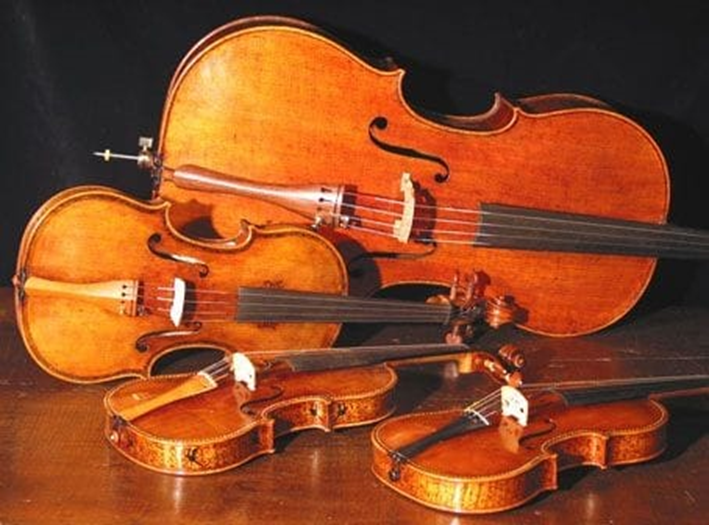
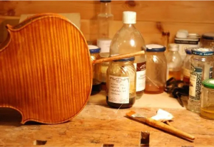
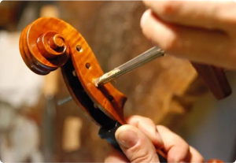
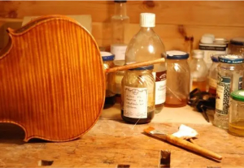
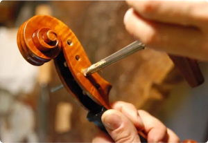

Quem somos
-

Missão
Oferecer ensino musical de excelência, formando músicos comprometidos com a técnica, a interpretação e a sensibilidade artística. Nosso compromisso é acompanhar cada aluno no desenvolvimento de suas habilidades, respeitando suas individualidades e promovendo a apreciação da música como um patrimônio cultural essencial -
Visão
Ser referência no ensino de música clássica no Espírito Santo, inspirando uma nova geração de músicos que valorizem a excelência e a expressão artística, contribuindo para o fortalecimento e a difusão da cultura musical.
-

Valores
• Excelência: Comprometemo-nos com o aprimoramento contínuo, prezando pela qualidade em cada aula, ensaio e apresentação.
• Respeito: Valorizamos a trajetória e os sonhos de cada aluno, respeitando seu ritmo e particularidades no processo de aprendizado.
• Dedicação: Ensinamos com paixão e compromisso, formando músicos com profundo entendimento da arte, comprometidos com o crescimento musical e pessoal
• Inovação: Promovemos o uso de metodologias atualizadas e novas abordagens pedagógicas, proporcionando um aprendizado acessível, envolvente e enriquecedor.


 


